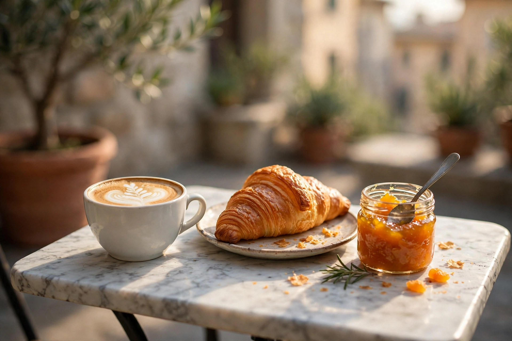

07:30 →Il caffè prima di tutto
Atto I · Mattina
La giornata comincia presto: dalle 7:30 il bancone serve il caffè che gli ospiti definiscono «eccezionale», prima e dopo il lavoro. E c’è un dettaglio che più di uno ricorda per nome: la marmellata fatta in casa, da assaggiare con la colazione.